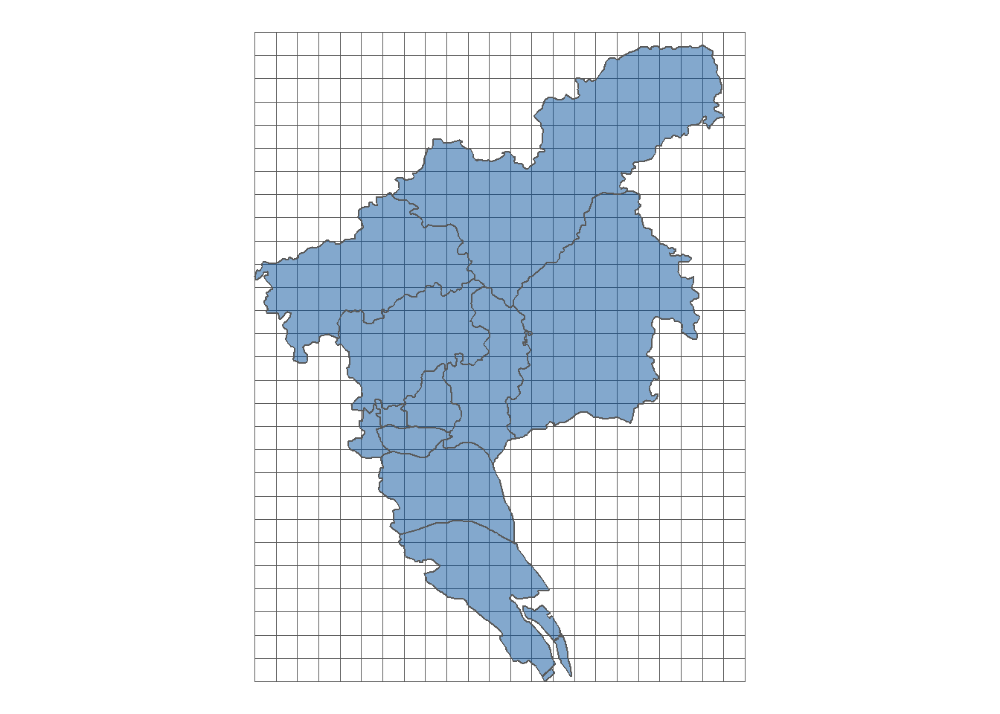

pacman::p_load(sf, stars, raster, dplyr, ggplot2, viridis, here, patchwork, ggspatial)
options(rgl.useNULL = TRUE)
Sys.setenv(PROJ_LIB = '/data1/Software/Installed/Anaconda3/envs/r4.1/share/proj')在公共卫生的科研论文或标书撰写过程中，我们常常需要使用地址数据。此时，能用可视化的方式展示样本的空间分布往往能够给编辑或审稿人较好的印象分。
空间数据总述
数据类型
- 矢量数据（vector data）：点、线、多边形（polygons）。常见数据格式：
.shp。 - 栅格数据（raster data）：一般是规整的相等面积的长方形格子。常见数据格式：
.tif和.nc。
下图展示了矢量数据和栅格数据的示意图

相关R包
- 矢量数据：
- 新：
sf - 旧：
sp
- 新：
- 栅格数据：
- 新：
stars - 旧：
raster,terra
- 新：
相关函数
读取数据
- 矢量数据：
sf::read_sf() - 栅格数据：
- 新：
stars::read_stars() - 旧：
raster::raster(),terra
- 新：
R语言实践
加载环境
首先需要加载R环境和相关的包。如果你使用的是课题组的Linux服务器，则下面三行均需要运行。如果你使用自己的电脑，或者你的R包环境已经配置好，可以忽略pacman::p_load下面的那两句。
矢量边界绘制
本节以中国的矢量图边界为例，展示用R的sf和dplyr包来处理矢量地图数据（.shp文件），然后用ggplot2来绘制矢量边界地图。由于全国的所有边界数据较大，绘制时间比较久，因此大部分时间本文采用广州市的区县边界进行展示。
数据位置
shp_path = '/data2/ShareData/MAP/China_shp/'
fs::dir_info(shp_path) %>%
select(path, size) %>%
filter(grepl('\\.shp', path))# A tibble: 5 × 2
path size
<fs::path> <fs::bytes>
1 E:/China_shp/boundary.shp 1.01M
2 E:/China_shp/city.shp 26.35M
3 E:/China_shp/county.shp 57.66M
4 E:/China_shp/NineLine.shp 2.88M
5 E:/China_shp/province.shp 23.32M从上到下分别是：
- 中国国界（
boundary.shp） - 中国市级边界（
city.shp） - 中国区县级边界（
county.shp） - 九段线（
NineLine.shp） - 中国省级边界（
province.shp）
矢量数据读取
CN_boundary <- read_sf(here(shp_path, 'boundary.shp'))
CN_city <- read_sf(here(shp_path, 'city.shp'))
CN_county <- read_sf(here(shp_path, 'county.shp'))
CN_9dash <- read_sf(here(shp_path, 'NineLine.shp'))
CN_province <- read_sf(here(shp_path, 'province.shp'))矢量数据清理
这些矢量数据实际就像数据框，可以使用dplyr（dplyr::select()，mutate(), filter(), arrange()）的语法进行操作。例如，可以使用filter()选取广州市的区县边界：
CN_county %>%
filter(市 == '广州市')Simple feature collection with 11 features and 7 fields
Geometry type: MULTIPOLYGON
Dimension: XY
Bounding box: xmin: 815833.3 ymin: 2383964 xmax: 925069.2 ymax: 2537977
Projected CRS: Krasovsky_1940_Albers
# A tibble: 11 × 8
PAC NAME 省代码 省 市代码 市 类型 geometry
* <dbl> <chr> <dbl> <chr> <dbl> <chr> <chr> <MULTIPOLYGON [m]>
1 440103 荔湾区 440000 广东省 440100 广州市 市辖区 (((847866 2444953, 848089.6…
2 440104 越秀区 440000 广东省 440100 广州市 市辖区 (((848782.7 2445425, 849481…
3 440105 海珠区 440000 广东省 440100 广州市 市辖区 (((853312.2 2440874, 854128…
4 440106 天河区 440000 广东省 440100 广州市 市辖区 (((863466.5 2455459, 863169…
5 440111 白云区 440000 广东省 440100 广州市 市辖区 (((869239.4 2477347, 869252…
6 440112 黄埔区 440000 广东省 440100 广州市 市辖区 (((871179.3 2476068, 871272…
7 440113 番禺区 440000 广东省 440100 广州市 市辖区 (((876897.9 2433952, 876905…
8 440114 花都区 440000 广东省 440100 广州市 市辖区 (((847130 2495872, 847622.5…
9 440115 南沙区 440000 广东省 440100 广州市 市辖区 (((895851 2386042, 893897.1…
10 440117 从化区 440000 广东省 440100 广州市 市辖区 (((921473.7 2534710, 921480…
11 440118 增城区 440000 广东省 440100 广州市 市辖区 (((923442.3 2473232, 923443…矢量边界绘制
我们可以使用ggplot2::geom_sf()对广州市的区县边界进行绘制：
ggplot() +
geom_sf(
data = CN_county %>%
filter(市 == '广州市')) +
theme_void()
如果你讨厌灰色的填充颜色，也可以通过fill = NA把颜色去掉：
ggplot() +
geom_sf(
data = CN_county %>%
filter(市 == '广州市'),
fill = NA) +
theme_void()加上指北针和标尺
ggplot() +
geom_sf(
data = CN_county %>%
filter(市 == '广州市'),
fill = NA) +
annotation_scale( # 标尺
width_hint = 0.4,
text_cex = 1,
unit_category = 'metric',
location = 'bl') +
annotation_north_arrow( # 指北针
location = "tl",
which_north = "true",
height = unit(0.7, "cm"),
width = unit(0.7, "cm"),
pad_y = unit(0.5, "cm")) +
theme_void()
矢量投影
WGS84是目前最流行的地理坐标系统。在国际上，每个坐标系统都会被分配一个EPSG 代码，EPSG:4326就是WGS84 的代码。GPS是基于WGS84的，所以通常我们得到的坐标数据都是WGS84的。一般我们在存储数据时，仍然按WGS84存储。计算地理距离时也应该通过WGS84投影进行计算。
但是如果绘图的时候使用WGS84投影，会显得靠近两极地区的面积失真。对于中国地图来说，WGS84投影非常不美观，画图来的地图像”一只强制性脊柱炎的公鸡”。因此，如果需要绘制全国地图，可以使用ESPG: 4508或者ESPG: 32649，在ggplot2中可以通过coord_sf(crs = XXXX)来设置整幅图的投影。
对于矢量数据，可以通过sf::transform()对其投影进行转换，如：
# 原始数据投影为Asia_North_Albers_Equal_Area_Conic
CN_provinceSimple feature collection with 34 features and 2 fields
Geometry type: MULTIPOLYGON
Dimension: XY
Bounding box: xmin: -3034406 ymin: 378665.2 xmax: 1844827 ymax: 5866009
Projected CRS: Asia_North_Albers_Equal_Area_Conic
# A tibble: 34 × 3
CNAME Name_E geometry
<chr> <chr> <MULTIPOLYGON [m]>
1 安徽省 Anhui (((578768.5 3711869, 578787.1 3711729, 578883.3 3711606…
2 澳门 Macao (((373363.8 2308123, 373702.6 2307267, 373759.7 2307131…
3 北京市 Beijing (((548491.6 4437692, 548534.5 4437621, 548562 4437591, …
4 福建省 Fujian (((759764.7 2483316, 759718.8 2483296, 759692.8 2483307…
5 甘肃省 Gansu (((-350146.9 3792524, -350199 3792482, -350290 3792537,…
6 广东省 Guangdong (((12072.27 2090275, 12129.04 2090236, 12168.24 2090234…
7 广西自治区 Guangxi (((-83804.96 2165368, -83767.37 2165360, -83726.52 2165…
8 贵州省 Guizhou (((-495399.6 2617929, -495408.6 2617927, -495417.3 2617…
9 海南省 Hainan (((251802.2 378776.4, 251001.7 378665.2, 249527.3 37878…
10 河北省 Hebei (((645925.9 4168006, 646146.8 4167906, 646334.2 4167914…
# … with 24 more rows
# ℹ Use `print(n = ...)` to see more rows# 我们将其投影为WGS84
CN_province_4326 = st_transform(CN_province, crs = 4326)
CN_province_4326Simple feature collection with 34 features and 2 fields
Geometry type: MULTIPOLYGON
Dimension: XY
Bounding box: xmin: 73.48735 ymin: 3.833843 xmax: 134.7752 ymax: 53.5616
Geodetic CRS: WGS 84
# A tibble: 34 × 3
CNAME Name_E geometry
* <chr> <chr> <MULTIPOLYGON [°]>
1 安徽省 Anhui (((116.4295 34.63088, 116.4296 34.62963, 116.4306 34.62…
2 澳门 Macao (((113.5874 22.16486, 113.5904 22.15695, 113.5909 22.15…
3 北京市 Beijing (((116.632 41.05889, 116.6325 41.05824, 116.6328 41.057…
4 福建省 Fujian (((117.4155 23.56092, 117.415 23.56077, 117.4148 23.560…
5 甘肃省 Gansu (((106.0713 35.44953, 106.0708 35.44915, 106.0697 35.44…
6 广东省 Guangdong (((110.1136 20.23365, 110.1142 20.23329, 110.1146 20.23…
7 广西自治区 Guangxi (((109.2054 20.91925, 109.2058 20.91918, 109.2062 20.91…
8 贵州省 Guizhou (((105.0947 24.92519, 105.0946 24.92517, 105.0945 24.92…
9 海南省 Hainan (((112.0392 3.834796, 112.0327 3.833843, 112.0208 3.835…
10 河北省 Hebei (((117.558 38.61515, 117.5605 38.61412, 117.5627 38.614…
# … with 24 more rows
# ℹ Use `print(n = ...)` to see more rows在使用ggplot2绘图过程中，也可以通过coord_sf(crs = XXXX)对投影进行转换。
ggplot() +
geom_sf(data = CN_province, fill = NA, size = 0.1) +
geom_sf(data = CN_9dash %>%
filter(LEFT_FID == 0)) +
labs(title = 'ESPG: 4326') +
theme_void(base_size = 14) +
coord_sf(crs = 4326)
ggplot() +
geom_sf(data = CN_province, fill = NA, size = 0.1) +
geom_sf(data = CN_9dash %>%
filter(LEFT_FID == 0)) +
labs(title = 'ESPG: 4508') +
theme_void(base_size = 14) +
coord_sf(crs = 4508)
ggplot() +
geom_sf(data = CN_province, fill = NA, size = 0.1) +
geom_sf(data = CN_9dash %>%
filter(LEFT_FID == 0)) +
labs(title = 'ESPG: 32649') +
theme_void(base_size = 14) +
coord_sf(crs = 32649)栅格数据绘制
数据读取
通过stars::read_stars()读取.tif文件得到的是stars数据类型，属于栅格数据类型。stars数据一般有三个维度（dimension）：x，y和band，其中x和y分别为经纬度，band则指时间维度，可将不同日期的数据整合到同一个stars对象中。除了维度之外，还包括一个属性（attribute），主要指数据变量，如空气污染和绿植覆盖。
pm_gz = read_stars('E:/China_shp/CHAP_PM2.5_Guangzhou.tif')
pm_gzstars object with 2 dimensions and 1 attribute
attribute(s):
Min. 1st Qu. Median Mean 3rd Qu. Max. NA's
CHAP_PM2.5_Guangzhou.tif 20.5 21.9 22.8 22.77476 23.5 30.7 8557
dimension(s):
from to offset delta refsys point values x/y
x 1 109 112.962 0.01 WGS 84 FALSE NULL [x]
y 1 136 23.9297 -0.01 WGS 84 FALSE NULL [y]此处的样例数据因为是单天的数据，因此只有两个维度（x和y），没有band的维度。数据的属性为CHAP_PM2.5_Guangzhou，并且报告了其简单的统计量（最小值、最大值、均值、缺失值数量以及四分位数）。每个维度都有一个名字（如x和y`），每个维度的域的含义分别为：
| 域 | 含义 |
|---|---|
from |
原点 |
to |
终点的索引 |
offset |
此维度起始点的值 |
delta |
此维度网格的大小 |
refsys |
投影系统 |
point |
逻辑值，TRUE代表点，FALSE代表区间 |
values |
此维度的值 |
stars数据类型也可以通过dplyr包中的函数进行清理和转换。由于内容较多，此处不再详述，有兴趣的读者可以参考官方手册：
栅格数据清理
pacman::p_load(cubelyr)
pm_gz_cube = as.tbl_cube(pm_gz)
str(pm_gz_cube)List of 2
$ dims:List of 2
..$ x: num [1:109] 113 113 113 113 113 ...
..$ y: num [1:136] 23.9 23.9 23.9 23.9 23.9 ...
$ mets:List of 1
..$ CHAP_PM2.5_Guangzhou.tif: num [1:109, 1:136] NA NA NA NA NA NA NA NA NA NA ...
- attr(*, "class")= chr "tbl_cube"可以将其转换成data.frame以方便后续的操作，如双线性插值等。
pm_gz_tbl = as_tibble(pm_gz)
str(pm_gz_tbl)tibble [14,824 × 3] (S3: tbl_df/tbl/data.frame)
$ x : num [1:14824] 113 113 113 113 113 ...
$ y : num [1:14824] 23.9 23.9 23.9 23.9 23.9 ...
$ CHAP_PM2.5_Guangzhou.tif: num [1:14824] NA NA NA NA NA NA NA NA NA NA ...栅格数据绘制
ggplot() +
geom_stars(data = pm_gz) +
scale_fill_viridis(option = 'A', direction = -1, na.value = 'white', breaks = 20:29) +
labs(fill = latex2exp::TeX('PM$_{2.5}$')) +
guides(fill = guide_coloursteps( # guide_colourbar
title.position = "top",
title.theme = element_text(size = 16),
title.hjust = 0.5,
label.hjust = 1,
show.limits = TRUE,
barwidth = unit(0.7, "cm"),
barheight = unit(7, "cm"),
ticks = FALSE,
ticks.colour = 'white',
ticks.linewidth = 1.5)) +
theme_void(base_size = 16) +
coord_sf(crs = 4326)栅格和矢量数据混合绘制
单纯的栅格数据比较单调，缺少行政边界信息。通过ggplot2的图层，我们可以轻松地加上矢量边界信息。
ggplot() +
geom_stars(data = pm_gz) +
geom_sf(data = CN_county %>%
filter(市 == '广州市'), fill = NA) +
scale_fill_viridis(option = 'A', direction = -1, na.value = 'white') +
theme_void(base_size = 16) +
coord_sf(crs = 4326)
矢量和栅格数据相互转换
矢量 –> 等面积格子
将行政边界数据转换成相等大小的小格子。
gz_rect = CN_city %>%
filter(市 == '广州市') %>%
st_transform(crs = 4326) %>%
st_make_grid(cellsize = c(0.02, 0.02))
ggplot() +
geom_sf(data = gz_rect, fill = NA, size = 0.1) +
geom_sf(data = filter(CN_county, 市 == '广州市'),
fill = 'gray60', alpha = 0.3, size = 0.5) +
theme_void()
gz_grids = st_intersection(
gz_rect,
CN_city %>%
filter(市 == '广州市') %>%
st_transform(crs = 4326))
ggplot() +
geom_sf(data = gz_grids, fill = NA) +
theme_void()
栅格 –> 矢量
pm_gzstars object with 2 dimensions and 1 attribute
attribute(s):
Min. 1st Qu. Median Mean 3rd Qu. Max. NA's
CHAP_PM2.5_Guangzhou.tif 20.5 21.9 22.8 22.77476 23.5 30.7 8557
dimension(s):
from to offset delta refsys point values x/y
x 1 109 112.962 0.01 WGS 84 FALSE NULL [x]
y 1 136 23.9297 -0.01 WGS 84 FALSE NULL [y]pm_gz_sf = st_as_sf(pm_gz, as_points = FALSE, merge = FALSE)
pm_gz_sfSimple feature collection with 6267 features and 1 field
Geometry type: POLYGON
Dimension: XY
Bounding box: xmin: 112.9622 ymin: 22.5697 xmax: 114.0522 ymax: 23.9297
Geodetic CRS: WGS 84
First 10 features:
CHAP_PM2.5_Guangzhou.tif geometry
1 21.2 POLYGON ((113.8522 23.9297,...
2 21.2 POLYGON ((113.8622 23.9297,...
3 21.2 POLYGON ((113.8722 23.9297,...
4 21.1 POLYGON ((113.8822 23.9297,...
5 21.1 POLYGON ((113.8922 23.9297,...
6 21.1 POLYGON ((113.9022 23.9297,...
7 21.1 POLYGON ((113.9122 23.9297,...
8 21.0 POLYGON ((113.9222 23.9297,...
9 21.0 POLYGON ((113.9322 23.9297,...
10 21.0 POLYGON ((113.9422 23.9297,...ggplot() +
geom_sf(data = pm_gz_sf, fill = NA) +
theme_void()
可以加上格子的边界，只用于提醒这里是规则格子的矢量多边形，而不是栅格数据。
ggplot() +
geom_sf(data = pm_gz_sf, aes(fill = CHAP_PM2.5_Guangzhou.tif),
color = 'white', size = 0.1) +
scale_fill_viridis(option = 'A', direction = -1, na.value = 'white', breaks = 20:29) +
labs(fill = latex2exp::TeX('PM$_{2.5}$')) +
guides(fill = guide_coloursteps( # guide_colourbar
title.position = "top",
title.theme = element_text(size = 16),
title.hjust = 0.5,
label.hjust = 1,
show.limits = TRUE,
barwidth = unit(0.7, "cm"),
barheight = unit(7, "cm"),
ticks = FALSE,
ticks.colour = 'white',
ticks.linewidth = 1.5)) +
theme_void(base_size = 16) +
coord_sf(crs = 4326)去掉白色的边界后图如下所示，生成的图与使用geom_stars()和栅格数据画出来的图像一模一样。
ggplot() +
geom_sf(data = pm_gz_sf, aes(fill = CHAP_PM2.5_Guangzhou.tif),
color = NA) +
scale_fill_viridis(option = 'A', direction = -1, na.value = 'white', breaks = 20:29) +
labs(fill = latex2exp::TeX('PM$_{2.5}$')) +
guides(fill = guide_coloursteps( # guide_colourbar
title.position = "top",
title.theme = element_text(size = 16),
title.hjust = 0.5,
label.hjust = 1,
show.limits = TRUE,
barwidth = unit(0.7, "cm"),
barheight = unit(7, "cm"),
ticks = FALSE,
ticks.colour = 'white',
ticks.linewidth = 1.5)) +
theme_void(base_size = 16) +
coord_sf(crs = 4326)sf points
sample from multivariate normal distributions
n_obs = 5*10^3
sigma <- matrix(c(1, 1, 1, 1), 2, 2)
var_comp = MASS::mvrnorm(n = n_obs, rep(0, 2), sigma) %>%
as.data.frame()
colnames(var_comp) = c('var1', 'var2')
sysu = tibble(
lat = c(23.128, 23.09, 23.13, 23.10, 23.23, 23.11),
lon = c(113.289, 113.29, 113.32, 113.33, 113.22, 113.42)) %>%
slice(sample(1:n(), n_obs, replace = T)) %>%
bind_cols(var_comp) %>%
mutate(lat = lat + var1,
lon = lon + var1)
sysu_sf = sysu %>%
st_as_sf(coords = c("lon", "lat"), crs = 4326) %>%
mutate(intersection = geometry %>%
st_intersects(
CN_city %>%
filter(市 == '广州市') %>%
st_transform(crs = 4326)) %>%
as.character()) %>%
filter(intersection == 1)
ggplot() +
geom_sf(
data = CN_county %>%
filter(市 == '广州市'), fill = NA) +
geom_sf(data = sysu_sf, size = 1, alpha = 0.2) +
theme_void()